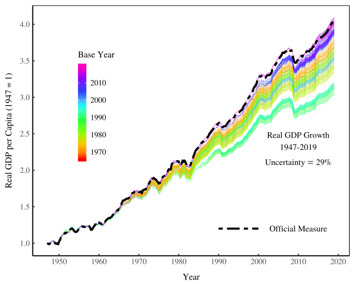

47 Economic Measurements
GDP is insufficient as a measure to capture what is essential about the economy.
47.1 Our BESDA economy
47.1.1 GDP and EBITDA
While the deficiencies of GDP as a measure have been well known, less emphasized has been the fact that every single financial statement with which we build GDP exhibits the same deficiency of being a limited barometer of value. Ironically, the main users of these financial statements, in the business and financial sectors, are wise to the incompleteness of certain metrics within financial statements, but act in a way that indicates they are oblivious – or perhaps just willing to overlook – the incompleteness of financial statements writ large. To explain, consider that GDP exhibits clear parallels with the profit metric of EBITDA (earnings before interest, taxes, depreciation and amortization), Though there are technical differences of formulation, GDP and EBITDA both represent partial measures of “wealth creation” disembedded from a fuller conception of value. However, while financiers are wise to the deficiencies of EBITDA, they have not acknowledged that the same pattern of incompleteness reappears at the level of the overall financial statement – and then at the yet higher level of GDP. With the “DA”, EBITDA conveys the profitability of a company as if it would never again have to spend a dollar on keeping its factories, equipment, property and software in good repair and up to date. In other words, EBITDA excludes the cost of maintaining in good condition the whole infrastructure upon which a company depends! It is the homeowner’s fantasy of how wealthy they would be if they never had to fix or repair anything in their house ever again.
EBITDA came to prominence during the leveraged buyout (LBO) boom of the 1980s. As Moody’s recounted in 2000: “LBO sponsors and bankers have promoted the use of EBITDA for its obvious image benefits. EBITDA creates the appearance of stronger interest coverage and lower financial leverage.” As a general rule, beware profit metrics promising image benefits. Forbes was blunter still: “EBITDA is essentially a tool that shows what a company
would look like if it wasn’t actually that company.” EBITDA is now clearly recognized as a “wool-over-your-eyes” measure, such that accounting authorities deny it official status. It is a “non-GAAP” metric – not a Generally Accepted Accounting Principle. Its ongoing ubiquity – besides being trivially easy to calculate – is because it masks the fact that a business may be overleveraged – that it may have borrowed against its future more than it can ever repay.
GDP is a “wool-over-all-of-our-eyes” metric for the same reason that it excludes the full cost of maintaining in good condition the social and ecological infrastructure upon which the whole economy depends. In steering society by GDP, we are effectively managing the planet on an EBITDA basis. GDP is not just a benignly incomplete measure of wealth, it is the tool with which we are conning ourselves.
Businesspeople – and homeowners - know how these stories end. Eventually the under- investment in infrastructure catches up with you. Of course, by then, you hope to have passed the asset – and the problem – on to someone else. This is feasible, if not best form, where the asset is not the whole planet. The deception works for as long as you can get away with the under-investment and the factories and software hold up. Buffet’s partner, Charlie Munger, is characteristically more forthright on the topic: “I think that, every time you see the phrase ‘EBITDA earnings’, you should substitute the phrase ‘bullshit earnings’.” By analogy, GDP is “bullshit wealth”. That we have been able to enjoy the comforts of its deception without mishap for so long is simply because it was introduced against higher levels of social and ecological infrastructure that we have not yet completely run down. The under-investment is only now becoming apparent.
47.1.2 A BESDA economy
Long-term or ESG (environmental, social and governance) investors may protest that they understand all this but that their own investment process insulates them from such blinkered thinking. (“We don’t use EBITDA”). Yet the point is that the whole financial system is operating on a “before ecological and social depreciation and amortization” basis – call it BESDA, perhaps. So, every single financial metric on the Bloomberg screen is a BESDA metric – profits- BESDA, earnings per share-BESDA, return on capital-BESDA, return on equity-BESDA, etc. The millions of financial numbers processed daily by our increasingly automated markets – which, in turn, steer our economy and drag our culture along behind, ripping up nature in its wake – are all BESDA numbers. It might not only be EBITDA with which we are conning ourselves, but every financial number in the book. They all represent different degrees of disembedded value, some of which we have unmasked, some of which we have not. We have a sustainability challenge because the entire financial system repeats the problems of the discredited EBITDA metric at the level of the whole economy. This is the invisible conceptual cage we have wrapped around our decision-making and from within which the ESG movement is frantically trying to make a difference. Alas, given the incompleteness of our markets, the ESG movement increasingly resembles a hopeful grafting of good intentions onto an unchallenged accounting reality that remains the largely intact source of our problems. This is the root cause of our collective “greenwish” in which we are hoping that well-intended efforts to make the world more sustainable are much closer to achieving the necessary change than they really are
TRUECOST
Trucost, the sustainable consulting firm, estimated in 2013 that large swathes of primary industry – including agriculture and energy companies – would simply not be profitable if they had to pay the full costs of their 14 environmental damage. In 2011, the American Economic Review, published similar work showing that the solid waste combustion, sewage treatment and oil- and coal-fired power production industries generated air pollution damages – air pollution alone – that were greater 15 than their economic value added (EVA). On this fuller accounting perspective, these are effectively EVS – economic value subtracted – industries.
Duncan Austin: Pigou and the dropped stitch of economics RWER95 (pdf)
47.2 GDP
For measurement to be accurate, the units must be stable. Unlike natural scientists, however, economists are not in the business of carefully defining units using universal physical constants. Economists instead use prices, a social construct, as their unit of analysis.
The problem is that prices are unstable units of measurement. Relative prices between commodities vary wildly over time. This instability means that prices fail the only requirement of a good unit — to be uniform over time.
Instead of reporting the severe uncertainty in ‘real’ GDP, governments report a single official value. This value hides a myriad of subjective decisions that are used to ‘correct’ for unstable prices.
Instead of wasting time with a useless quantity that reveals nothing profound about the world, we should seek new pluralistic methods for understanding aggregate economic activity.
Price instability translates into uncertainty in the growth of ‘real GDP’. While the US government reports only one official measure of ‘real’ GDP, it quietly maintains a database of ‘vintage’ GDP estimates. These are estimates calculated with different base years. Using this ‘vintage’ data, we can quantify the uncertainty in the growth of ‘real’ GDP caused by unstable prices.

Notice that the official measure of US ‘real’ GDP is at the upper end of the range of uncertainty. We doubt this is a coincidence. In fact, it is common for national governments to boost GDP growth by changing the base year. India recently showed a small increase in GDP growth by choosing a new base year. While this boost was small, it can sometimes be spectacularly large. Nigeria, for instance, recently changed its base year from 1990 to 2010. As a result, real GDP doubled, making Nigeria the largest economy in Africa. Base-year changes have led to similar boosts to GDP growth in Ghana, Kenya, Tanzania, Uganda and Zambia.
The NIPA Handbook, the US Bureau of Economic Analysis notes:
The fundamental problem confronting the efforts to adjust GDP and other aggregates for inflation is that there is not a single inflation number but rather a wide spectrum of goods and services with prices that are changing relative to one another over time. The index numbers for the individual components can be combined statistically to form an aggregate index, but the method of aggregation that is used affects the movements of the resulting index.
Ambigous
The growth of ‘real’ GDP is fundamentally uncertain. Or perhaps a better word is ambiguous.
Mainstream economists reach a very different conclusion. Their response is to simultaneously admit that calculating ‘real’ GDP requires arbitrary choices, but then to report a single value as though it was the ‘truth’.
ChainWeighting
The US government currently calculates ‘real’ GDP by adjusting nominal GDP with an aggregate index formed through the multiplication of successive Fisher indexes in adjacent time periods. In popular parlance, this method is called ‘chain-weighting’. Rather than choose a single base year in which to fix prices, chain-weighting uses a technique that resembles a rolling base year. The method is meant to simulate the effect of changing prices and spending patterns over time. This method was adopted in the mid-1990s. The official justification was that structural changes in the US economy, especially rapidly falling computer prices, compelled the government to end the fixed base year method.
GDP treats everything with a price as contributing positively to society. Again, this comes down to the assumption that all prices reveal utility. If machine guns sell for the same price as MRI machines, neoclassical theory tells us that both contribute the same utility to society.
In response to such absurdities, ecological economists have developed alternative indicators that subtract the value of social ‘bads’ from the value of social ‘goods’. While well-motivated, this approach still assumes that we can aggregate the ‘real’ value of ‘goods’ and ‘bads’. But because prices are unstable, this aggregate is still ill-defined.
‘Real’ GDP is a regressive measure of social progress. Not only is it ill-defined and based on flawed premises, it equates market value with social welfare. This justifies the income of the powerful.
Alternatives
The key, we believe, is to separate the study of economic distribution from the study of economic scale. The former is the appropriate domain of prices. The latter is best measured using biophysical units.
Prices: Distribution
We believe it is important to distinguish between economic distribution and economic scale. ‘Real’ GDP assumes that prices can be used to measure economic scale. In contrast, we assume that prices do nothing of the sort. Prices are a tool for distributing resources. The proper place for prices, then, is for understanding economic distribution.
Scale: Energy
To measure the scale of the economy, we think it is appropriate to focus on energy. Physicist Eric Chaisson argues that energy is the universal currency of science. By measuring economic scale using energy, we put economics in line with the rest of science. And if we are concerned with sustainability, there is no better starting point than to focus on energy use. After all, the profligate use of fossil fuels under a capitalist economy is the primary driver of climate change.
Energy has many forms as it is flows through society. One possibility is to focus on primary energy consumption, and see how this relates to changes in social structure. Another possibility is to measure ‘useful work’ — the consumption of end-use energy. Still another possibility is to measure the aggregate flow rate, which is a measure of all annual energy conversions in an economic system.
The study of economic growth, which should focus on biophysical flows.
Continuing to use ‘real’ GDP as a measure of social progress implicitly accepts a theory (neoclassical economics) that has long been used as an ideological justification for capitalist power.
47.2.1 GDP Revisions
Assa Abstract
What are the implications of changes in measurement standards of GDP for global convergence debates? What are the political economy implications? To answer the former question, we examine the changes in national accounting standards from the early 1990s. Revisions to the System of National Accounts (SNA) – the international standard for constructing GDP – include several major changes to how production is measured, including the reclassification of financial intermediation services, R&D, and weapons systems as productive activities – all areas in which countries in the West has had an advantage in recent decades. In addition, there has been an increase in the proportion of imputations in the 1993 and 2008 revisions, which privileges the economic structures of the West. Overall, we find that these changes have had the effect of boosting the GDP of the West relative to the rest of the world and thus to an underestimation of global convergence compared to previous measures of GDP. To answer the second question, the paper unpacks the political economy implications of national accounting standards favouring Western economies along several axes, including the impacts on voting shares in international institutions, domestic policy incentives and epistemological debates about sustainable development.
Assa Abstract
Over the last half century, a large literature has developed on both the nature and the drivers of uneven development. While different methodologies and theoretical approaches to the issue of convergence abound, the use of GDP growth as a measure of economic growth has, remarkably, gone unquestioned. This paper reviews the convergence debates to date, and examines what the changes to the System of National Accounts (SNA) - the international standard for constructing macroeconomic indicators such as GDP - imply for assessing economic convergence. The 1993 and 2008 revisions to the SNA include several major changes to how production is measured - including the reclassification of financial intermediation services, R&D, weapons systems and owner-occupied dwellings as productive activities - all areas in which developed countries have had an advantage in recent decades. We argue that these changes to the production boundary constitute a form of ‘kicking away the ladder,’ i.e. redefining the yardstick of development to fit the new strengths of developed economies. We analyze data series for a range of countries concurrently available under the 1968 SNA, 1993 SNA and 2008 SNA standards. The earlier measure shows a larger and faster convergence of most countries in ‘the Rest’ with those of ‘the West’. Going a step further, we build on Basu and Foley’s (2013) Measured Value-Added concept as a proxy of ‘Core GDP’. This indicator omits any sector for which value-added is imputed based on net incomes, in the absence of an independent measure of output. This allows us to examine more countries and a longer, more consistent time series than concurrent SNA data, but the conclusions are the same - developing countries have caught up more in Core-GDP terms than the contemporary imputation-heavy measure of GDP would suggest. These findings suggest that the current measure of GDP has become decoupled from core employment-generating activities, and is therefore a misleading measure of growth in an economy. Furthermore, it is inconsistent with the understanding the Sustainable Development Goals of inclusive and sustainable growth. Finally, the paper considers the political economy implications of the changes in GDP methodology, such as the justification of voting shares in international financial institutions, epistemological consequences, and domestic political economy considerations.
Kvangraven
Economic growth was first measured by governments in the 17th century. In the modern era, the United Nations took over responsibility for measuring output in 1953, and was joined in 1993 by the World Bank, IMF, OECD and EU. They all feed into decisions about the international measurement rules, which are taken by the UN inter-secretariat working group on national accounts (ISWGNA), and all countries are meant to comply. This reflects a gradual move away from national governments controlling the statistics to financial institutions having a larger say.
Both in 1993 and again in 2008, the so-called “production boundary”, which determines what is included in GDP, was broadened by the ISWGNA to include many activities that were hitherto excluded or at most seen as intermediate inputs.
Thanks to these reforms, financial intermediation, research and development, and the production of weapons all began to be counted within GDP data across the world. For example, in 1993 the income banks earned on interest from lending to households was included in GDP for the first time. And then in 2008, even bank money that had nothing to do with intermediation services began to be included.
Since western countries such as the UK and US have specialised in these activities in recent decades – the US is first in weapons and second in financial services and R&D, while the UK leads on financial services – the changes have disproportionately benefited their GDP numbers.
47.2.2 GDP Alternatives
Coyle
How should we measure economic success? Criticisms of conventional indicators, particularly gross domestic product, have abounded for years, if not decades. Environmentalists have long pointed out that GDP omits the depletion of natural assets, as well as negative externalities such as global warming. And its failure to capture unpaid but undoubtedly valuable work in the home is another glaring omission. But better alternatives may soon be at hand.
In 2009, a commission led by Joseph Stiglitz, Amartya Sen, and Jean-Paul Fitoussi spurred efforts to find alternative ways to gauge economic progress by recommending a “dashboard” of indicators. Since then, economists and statisticians, working alongside natural scientists, have put considerable effort into developing rigorous wealth-based prosperity metrics, particularly concerning natural assets. The core idea is to create a comprehensive national balance sheet to demonstrate that economic progress today is illusory when it comes at the expense of future living standards.
In an important milestone in March of this year, the United Nations approved a statistical standard relating to the services that nature provides to the economy. That followed the UK Treasury’s publication of a review by the University of Cambridge’s Partha Dasgupta setting out how to integrate nature in general, and biodiversity in particular, into economic analysis. With the consequences of climate change starting to become all too apparent, any meaningful concept of economic success in the future will surely include sustainability.
The next steps in this statistical endeavor will be to incorporate measures of social capital, reflecting the ability of communities or countries to act collectively, and to extend measurement of the household sector. The COVID-19 pandemic has highlighted how crucial this unpaid work is to a country’s economic health. For example, the US Bureau of Labor Statistics intends to develop a more comprehensive concept of living standards that includes the value of such activity.
But many advocate thinking about economic success and failure in terms of well-being, a broader and fuzzier concept. The idea that policy decisions should focus on what ultimately matters in people’s lives is intuitively appealing. And a number of governments, from New Zealand to Scotland, have recently adopted explicit well-being policy frameworks.
Public policy based on well-being thus still lacks a theoretical underpinning. One recent UK study, co-produced by researchers and people experiencing poverty, found that while basic material needs including health were important to well-being, autonomy and a sense of purpose mattered just as much. The top-down aggregate indicators devised by social scientists and statisticians cannot capture such findings.
Keep in mind that the concept of well-being is much richer than most other economic indicators. Importantly, the comprehensive wealth and well-being approaches outlined here are complementary: the assets measured by the former provide the means to achieve the latter. Indeed, New Zealand’s policy framework makes this link explicit. What is exciting about these alternative approaches to assessing and measuring the economic success of a community or country is the amount of practical progress already made in defining concepts, creating metrics, and building expert consensus about the direction policymaking should take. Ditching GDP as the main gauge of prosperity was always impossible in the absence of broad agreement about what the alternative might be. And it will take many more years of work at the statistical coalface to develop a framework as sophisticated and well-embedded as GDP and related economic indicators. But the direction of change is clear, and the impetus to bring it about is powerful.